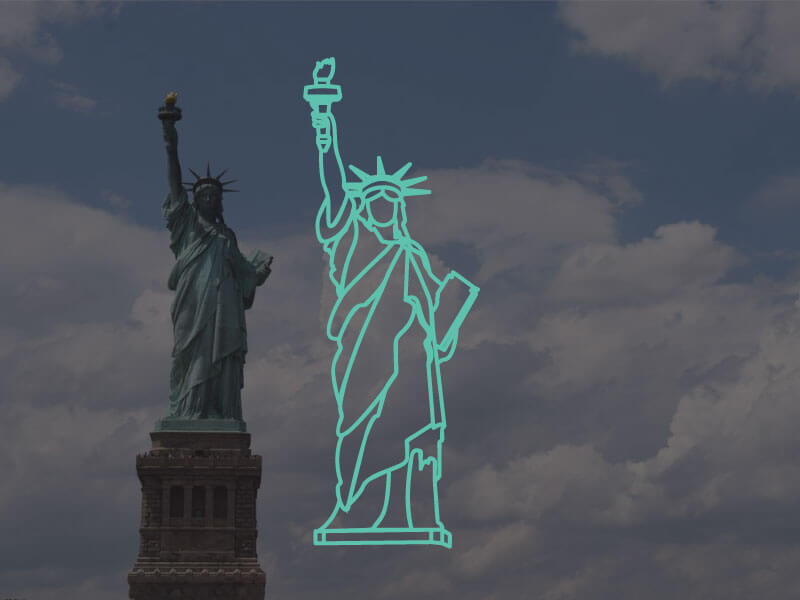

The Statue of Liberty
The Statue of Liberty is a colossal neoclassical sculpture on Liberty Island in New York Harbor in New York City, in the United States. The copper statue, designed by Frédéric Auguste Bartholdi, a French sculptor, was built by Gustave Eiffel and dedicated on October 28, 1886.
It was a gift to the United States from the people of France. The statue is of a robed female figure representing Libertas, the Roman goddess, who bears a torch and a tabula ansata (a tablet evoking the law) upon which is inscribed the date of the American Declaration of Independence, July 4, 1776. A broken chain lies at her feet. The statue is an icon of freedom and of the United States, and was a welcoming sight to immigrants arriving from abroad.
In 1984, the Statue of Liberty was designated a UNESCO World Heritage Site.